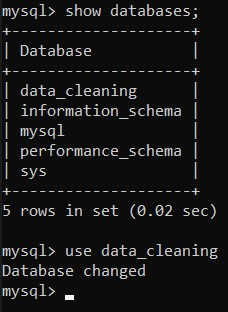
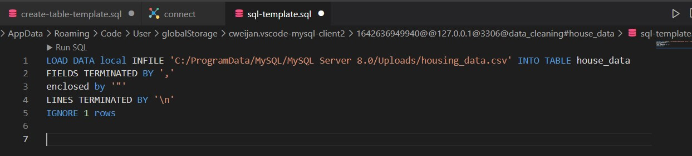

Importing Data with Command Promt
When importing large data files into MySQL, there are two main issues - missing data and wait for ages just to import a file - that I encountered the majority of the time, and it took me a long time to figure out how to fix them. Unfortunately, I couldn't come up with any simple solutions. Things appear to be too complex for me to follow after hours and hours of reading other people's recommendations. But still nothing worked and that made me frustrated.
Then I discovered a "treasure tool" that allowed me to import massive datasets in seconds, and since then, none of my data has gone missing. The method is to use COMMAND PROMT to import CSV data into MySQL. You can do it in a flash with the following guidance.
Action stage
Step 1: Type cmd in the search box -> Enter to open Command Prompt
Step 2: Login to MySQL
Type mysql -u root -p --local_infile = 1 to the space below
After that you enter the password you use in MySQL to complete the login
"root" here is the username that you use to login. Most people will use the default name and that is my case. Replace "root" with your username if it's different.
local_infile = 1 will enable the "LOAD DATA LOCAL INFILE" that help us import our data later.
Step 3: View and select database
Type show databases; (remember to have ";" at the end -> it's a sign that you end your code and they will run).
The list of all databases you have in MySQL will be listed.
Type use 'the name of your database' in my case use data_cleaning to select the database to import the file

Step 4: Import the dataset
Note: Create the table that has the columns correlated with the table you will import first before moving to next step. (how to create tables in MySQL)
Write the code below to the command promt. You should write it in code editor or MySQL to make sure the syntax is correct.
Note: the data file should be moved to "C:\ProgramData\MySQL" if you encountered "--secure-file-priv" (or you can use SHOW VARIABLES LIKE "secure_file_priv"; to see where is the directory that is configured -> then move your file there).
Note: replace the backflash "\" with "/" when showing the path to your file Ex: 'C:/ProgramData/MySQL/MySQL Server 8.0/Uploads/housing_data.csv'

Our CSV values are separated by commas so that's why we use FIELDS TERMINATED BY ','
Separate the lines with LINES TERMINATED BY '\n'
We will not import the header since we already created the header for our table, so use IGNORE 1 rows
You are amazing that you have make this far. I hope this information might assist you in resolving your issue. Over 50000 values are imported in under 3 seconds, as you can see. Try it out and get a taste of how fast data can be imported.